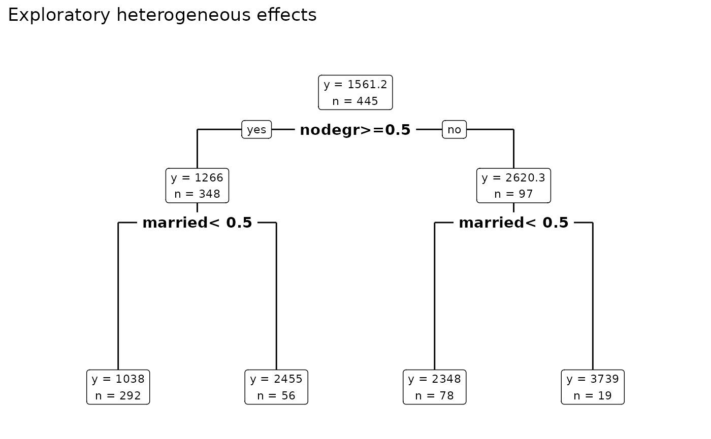

plot_moderator_search.RdFit single regression tree on bartc() icates to produce variable importance plot & table.
a model produced by bartCause::bartc(). Typically store$model_results
number of node levels within the tree. 2 is recommended
type of plot to draw. See rpart.plot for details
extra information to display. See rpart.plot for details
rpart plot
data(lalonde)
confounders <- c('age', 'educ', 'black', 'hisp', 'married', 'nodegr')
model_results <- bartCause::bartc(
response = lalonde[['re78']],
treatment = lalonde[['treat']],
confounders = as.matrix(lalonde[, confounders]),
estimand = 'ate',
commonSuprule = 'none'
)
#> fitting treatment model via method 'bart'
#> fitting response model via method 'bart'
plot_moderator_search(model_results)

#> $obj
#> n= 445
#>
#> node), split, n, deviance, yval
#> * denotes terminal node
#>
#> 1) root 445 286352900 1571.557
#> 2) nodegr>=0.5 348 110979900 1283.161
#> 4) married< 0.5 292 19880670 1063.991 *
#> 5) married>=0.5 56 3935435 2425.976 *
#> 3) nodegr< 0.5 97 42588430 2606.217
#> 6) married< 0.5 78 11286070 2343.781 *
#> 7) married>=0.5 19 3876578 3683.585 *
#>
#> $snipped.nodes
#> NULL
#>
#> $xlim
#> [1] -0.2 1.2
#>
#> $ylim
#> [1] -0.4 1.4
#>
#> $x
#> [1] 0.50408589 0.20620540 0.05726515 0.35514565 0.80196638 0.65302614 0.95090663
#>
#> $y
#> [1] 0.94927367 0.52954040 0.02586048 0.02586048 0.52954040 0.02586048 0.02586048
#>
#> $branch.x
#> [,1] [,2] [,3] [,4] [,5] [,6] [,7]
#> x 0.5040859 0.2062054 0.05726515 0.3551456 0.8019664 0.6530261 0.9509066
#> NA 0.2062054 0.05726515 0.3551456 0.8019664 0.6530261 0.9509066
#> NA 0.5040859 0.20620540 0.2062054 0.5040859 0.8019664 0.8019664
#>
#> $branch.y
#> [,1] [,2] [,3] [,4] [,5] [,6] [,7]
#> y 1.03846 0.6187266 0.1150467 0.1150467 0.6187266 0.1150467 0.1150467
#> NA 0.8484545 0.4287213 0.4287213 0.8484545 0.4287213 0.4287213
#> NA 0.8484545 0.4287213 0.4287213 0.8484545 0.4287213 0.4287213
#>
#> $labs
#> [1] "1572\nn=445" "1283\nn=348" "1064\nn=292" "2426\nn=56" "2606\nn=97"
#> [6] "2344\nn=78" "3684\nn=19"
#>
#> $cex
#> [1] 1
#>
#> $boxes
#> $boxes$x1
#> [1] 0.41871230 0.12083181 -0.02810843 0.28257417 0.72939491 0.58045466
#> [7] 0.87833515
#>
#> $boxes$y1
#> [1] 0.89886410 0.47913083 -0.02454909 -0.02454909 0.47913083 -0.02454909
#> [7] -0.02454909
#>
#> $boxes$x2
#> [1] 0.5894595 0.2915790 0.1426387 0.4277171 0.8745379 0.7255976 1.0234781
#>
#> $boxes$y2
#> [1] 1.0384598 0.6187266 0.1150467 0.1150467 0.6187266 0.1150467 0.1150467
#>
#>
#> $split.labs
#> [1] ""
#>
#> $split.cex
#> [1] 1 1 1 1 1 1 1
#>
#> $split.box
#> $split.box$x1
#> [1] 0.35875968 0.05210882 NA NA 0.64786981 NA NA
#>
#> $split.box$y1
#> [1] 0.8096779 0.3899447 NA NA 0.3899447 NA NA
#>
#> $split.box$x2
#> [1] 0.6494121 0.3603020 NA NA 0.9560630 NA NA
#>
#> $split.box$y2
#> [1] 0.8872311 0.4674979 NA NA 0.4674979 NA NA
#>
#>